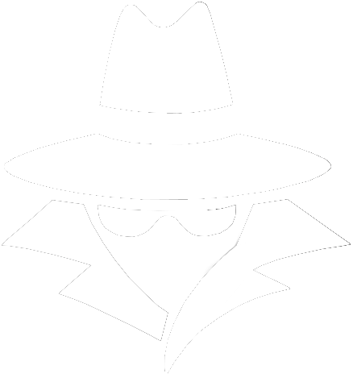

I have decided to study HBO ICT since a few years ago. It all started when I was interested in
studying Human Resource Management and Accountancy.
Then I realized that I don't even like HRM and the thought of being an accountant.
Quick enough I decided to study ICT as I love being able to indirectly helping others.
I really dislike reading a lot so numbers and formulas are way easier for me to understand and
process.
The programme ICT is also really useful because it is our future and you know that aswell.
The choice I made to study ICT was a bold choice. I've never tried coding or anything like that but
when I looked up the programme and what students learn, I was interested.
I have practised to use html not so long ago but I've got 0 skills.
On my previous study I haven't done anything computer related either. In the 3rd year, I (the stupid
me) chose the economics route. Biggest mistake of my whole life. I still regret that choice.
I honestly dislike everything about high schools in the Netherlands. Also I didn't pass my exam for
the most annoying subjects.
Eventhough I had bad high school years, I never gave up the fact that I wanted to study HBO. Finally
being able to focus on 1 thing instead of 600 other subjects which don't relate with eachother at
all.
I'll keep doing my best. I haven't coded anything at all and look at me now. The day I wrote this
was on the 7th of September and I got this far. Finallly a moment that I'm really proud of
myself.
The student life in my city, Terneuzen, is boring and there's nothing really. We've got a skihall
and a coffeeshop, besides that there's nothing fun. Just lots of old people, welcome in the
Netherlands!
When the time comes to graduate, I really hope to graduate as a software engineer.
When I do graduate as a software engineer, I would love to work for companies who are interested in
improving their software and are willing to hear everyone his/hers opinion and ideas.
My biggest dream is to improve the software of Emergency Services, as I would be able to help people
in need, indirectly.
I hope to learn more about how to create, improve and work with different software.
I also hope to move to Canada after my study. It's my dream to live and work in a country with
actually 4 seasons and not a country where 3 out of 4 seasons is the autumn season.
Specialists in the GIS use geogrphic information systems to serve a variety of functions within
organizations like Interpol, Emergency Services and government agencies.
These functions include disaster response, criminal analysis, law enforcement, and emergency
management.
They are responsible for the creation of maps, the performance of spatial analysis, and the
utilization of geospatial data in the decision-making process.
The GIS software uses technologies and sevices such as ArcGIS and QGIS. With these you can see the
streams of geographical data updated in real time.
They also use programs to share data that are based on GIS and run on the web and to collect data
using remote sensing for use in disaster assessment.
The culture of the company might vary, but it typically leans toward professionalism, attention to
detail, collaboration with other disciplines, and a heavy emphasis on the accuracy of spatial data.
It's possible that responsiveness and adaptation to rapidly shifting circumstances are being
prioritized in government agencies and emergency services.

Ethical hackers play a significant role in these companies by evaluating and improving the security
of digital assets such as sensitive government information and critical infrastructure.
Their work is referred to as "hacking with integrity."
They help ensure that systems are secure against cyber threats by identifying vulnerabilities and
contributing to the system's overall protection.
The technologies and services they use are tools for screening for vulnerabilities and testing for
penetration.
For example: SIEM is an abbreviation for security information and event management systems.
They also use streams of threat intelligence and awareness-raising and training programs for
security.
The culture of the company is one that is professional, technical, and results-oriented, with a
significant emphasis on compliance and security.
Ethical hackers who work for the government or law enforcement may be exposed to a culture that is
more formal,
whereas those who work in emergency services may be exposed to an atmosphere that is more fast-paced
and adaptable.
Cybersecurity Analysts working for Interpol, the Emergency Services, and other government
organizations are tasked with keeping an eye out for and responding to any potential cybersecurity
risks.
In addition to this, they put in place safeguards to secure sensitive data and essential systems.
The technology and services tools they use in cybersecurity are in a Security Operations Centre
(SOC).
They use IDS/IPS which stands for intrusion detection and prevention systems.
Security measures such as firewalls and antivirus software will be installed.
Frameworks and tools for responding to and managing cyber incidents.
Culture of the company is one that is highly professional and security-focused, with a heavy emphasis
on compliance and adherence to the best practices for cybersecurity.
The culture of an organization can range from extremely formal to business-casual, depending on the
nature of the company.
Security, compliance, and professionalism are typically placed in the highest regard within the
cultures of organizations such as Interpol, emergency services, and government agencies.
Nevertheless, distinct cultures might be rather different from one another depending on the kind of
organization, the tasks it does, and the sectors it serves.
In any event, a dedication to excellence as well as the careful management of sensitive data and
essential infrastructure is a core value that is held in common by the professions and industries in
question.
The links which I used to gather this information:
My strenghts are that I have a strong personality. In group projects, I'll always try to take the
"leader" role. Most of the time I don't even want to do that but it just happens.
I'll always listen to other people their opinion and ideas. That shows that they're willing to work
with you and that they're motivated.
My biggest weakness is that I can not tolerate bad communication in a group project.
Just like when somebody changes something and delete my paragraphs without communicating. That just
offends me.
Whenever someone doesn't do any work and take the credit for it, I'll be done with you and snitch on
you. No excuses.
I need to let people do their own thing and focus more on myself instead of focussing on everyone else and forget myself.
I care a lot about others and I love to help people but I tend to forget myself a lot.
Underneath is an article about The Future of work: ICT professionals.
The future of work: ICT professionals